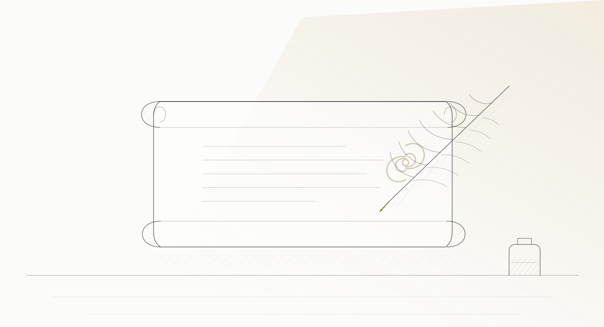

Crediamo che la dignità e l'autodeterminazione debbano essere garantite in ogni momento della vita.
Le DAT riguardano le cure, non i beni, e si possono fare anche senza un testamento. Tramite lo strumento formale delle Disposizioni anticipate di trattamento (DAT), ciascuno ha la possibilità di esprimere in modo chiaro e consapevole le proprie volontà in ambito sanitario, assicurando che le proprie preferenze vengano rispettate qualora dovesse sopraggiungere una temporanea o permanente incapacità di comunicare. È un'importantissima tutela della propria libertà, spesso poco conosciuta.
Le DAT, dette anche testamento biologico e regolate dalla legge 219/2017, permettono a una persona maggiorenne e capace di intendere e di volere di esprimere in anticipo le proprie volontà sulle cure: accertamenti diagnostici, scelte terapeutiche, trattamenti di sostegno vitale come la nutrizione e l'idratazione artificiali. Hanno effetto quando non si è più in grado di autodeterminarsi. Come per il testamento, anche in questo caso i tuoi cari saranno sollevati dal dover prendere decisioni complesse in momenti di dolore, in cui è facile perdere la lucidità, e saranno ridotti i potenziali conflitti tra i membri della famiglia.
Si redigono per atto pubblico, per scrittura privata autenticata da un notaio, oppure per scrittura privata consegnata di persona all'ufficio dello stato civile del proprio Comune; sono esenti da bollo e da ogni tassa; si possono revocare o modificare in qualsiasi momento, con le stesse forme. Puoi indicare un fiduciario — la cosiddetta delega sanitaria — cioè una persona di fiducia che faccia le tue veci con i medici e faccia valere la tua volontà. Con il tuo consenso, le DAT sono inserite nella Banca dati nazionale del Ministero della Salute (legge 205/2017, art. 1, comma 418), accessibile ai medici in caso di necessità. Se in futuro dovessi cambiare idea, potrai modificarle in qualsiasi momento, esattamente come per il testamento.
Avere una disposizione anticipata di trattamento, in genere, significa che eviterai:
- dolore inutile;
- procedure inutili;
- un ricovero ospedaliero non desiderato.
Consigliamo inoltre di specificare:
- dove desideri soggiornare durante le cure di fine vita: in un hospice (puoi scrivere anche quale), in una struttura di cure palliative, a casa con o senza cure palliative, o in un altro luogo — per esempio quanto previsto dal progetto «Pianeta Verde», quando sarà attivo;
- se richiedi un'assistenza spirituale: puoi indicare anche la Fondazione e la sua équipe del Pianeta Verde;
- se consenti qualsiasi visitatore, o limiti l'accesso ad alcuni cari o a nessuno, nel momento del passaggio della soglia e nelle settimane che lo precedono.
Se una malattia cronica, progressiva e invalidante è già presente, lo strumento complementare è la Pianificazione condivisa delle cure (art. 5 della stessa legge): un dialogo continuativo tra il paziente, il medico curante e, se lo desidera, i familiari o il fiduciario, per definire insieme un percorso di cura proporzionato alle fasi della malattia.
Attraverso una disposizione anticipata di trattamento puoi comunicare ai medici cosa desideri — o non desideri — finché sei in grado di farlo. Garantisci che i tuoi desideri più intimi e familiari vengano rispettati.
Esprimi le tue volontà in merito alle cure di fine vita.
La Fondazione ha preparato un fac-simile per le DAT, da compilare e portare al notaio o al Comune: scarica il modulo (PDF). È una bozza in lettura: non sostituisce il colloquio con il tuo medico.
Hai dubbi su cosa decidere? Scrivici e chiedi un confronto con un medico.
